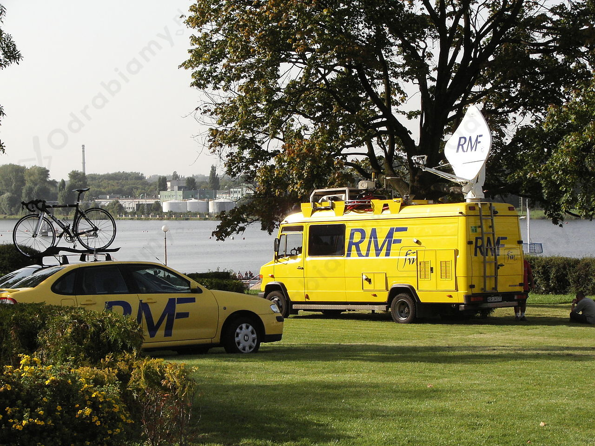

Rozwiązanie 1.:
| Media | Zalety | Wady | Szanse | Zagrożenia |
| Prasa |
|
|
|
|
| Radio |
|
|
|
|
| Telewizja |
|
|
|
|
| Media społecznościowe |
|
|
|
|
Rozwiązanie 2.:
| Media | Zalety | Wady | Szanse | Zagrożenia |
| Prasa |
Może dostarczyć wnikliwe i dogłębne informacje, ma wysoką jakość edytorską, a także dłuższe artykuły mogą zapewnić bardziej szczegółową analizę i kontekst. |
Zwykle opóźniona, wiadomości mogą być nieaktualne, a wydawcy mogą mieć swój punkt widzenia lub uprzedzenia, co może prowadzić do stronniczości. |
Może przyzwyczajać ludzi do kontaktu ze słowem pisanym i przyczyniać się do promocji czytelnictwa, a tym samym prowadzić do zmniejszenia poziomu analfabetyzmu. | Może promować nie tylko pozytywne, ale też negatywne wzorce zachowania, a jej wydawanie w tradycyjnej wersji papierowej wiąże się z koniecznością nadmiernej eksploatacji lasów. |
| Radio |
Może dostarczać aktualne informacje w czasie rzeczywistym, a także oferować różnorodne programy, w tym dyskusje, interakcje i muzykę. |
Może mieć ograniczoną dostępność w zależności od lokalizacji i sygnału, a także nie dostarczać wnikliwej analizy i kontekstu. Pozbawione jest obrazu, przez co okazuje się mniej atrakcyjne niż na przykład telewizja. |
Poszerza horyzonty słuchaczy i pozwala im zapoznawać się z dominującymi trendami muzycznymi, jak również sprawia, że do ludzi na bieżąco docierają rozmaite informacje. | Może dekoncentrować osoby, które akurat pracują lub kierują pojazdami, przez co wzrastać może ryzyko wypadków. |
| Telewizja |
Może dostarczać aktualne informacje w czasie rzeczywistym, a także oferować bogaty wizualny kontekst, w tym nagrania wideo, grafiki i animacje. |
Może mieć ograniczoną dostępność w zależności od lokalizacji i sygnału, a także nadmiernie skupiać się na sensacyjnych wiadomościach, kosztem mniej znaczących wydarzeń. |
Oferuje ludziom łatwo dostępną rozrywkę i stwarza okazję do częściowego uczestniczenia w wielu transmitowanych wydarzeniach, takich jak koncerty, mecze, przemówienia polityków czy uroczystości religijne. | Stwarza zagrożenie dla innych rodzajów mediów i powoduje, że ludzie korzystają z nich mniej chętnie, przez co zatracają na przykład nawyk czytania książek. |
| Media społecznościowe |
Mogą zapewnić dostęp do różnorodnych źródeł informacji, a także umożliwiają łatwe dzielenie się i dyskutowanie treści z innymi użytkownikami. |
Mogą propagować fałszywe informacje i nienawiść, a także prowadzić do uzależnienia od urządzeń elektronicznych i negatywnych skutków dla zdrowia psychicznego. |
Pozwalają zbliżać ludzi z różnych części świata i komunikować się osobom mimo dużych odległości przestrzennych. Stwarzają też okazję do nauki i poznawania dóbr kultury krajowych i zagranicznych bez wychodzenia z domu. | Grożą uzależnieniem się i zamknięciem się na świat bezpośrednich kontaktów międzyludzkich. |
Rozwiązanie 1.:
W przedstawionym fragmencie tekstu mają zastosowanie następujące zasady wymienione w Karcie etycznej mediów:
Rozwiązanie 2.:
W przedstawionej sytuacji zastosowanie mają takie zasady wymienione w Karcie etycznej mediów, jak: zasada prawdy, zasada obiektywizmu, zasada uczciwości oraz zasada wolności i odpowiedzialności.
Zasada prawdy nakazuje, aby dziennikarze przekazywali informacje prawdziwe. Dziennikarz z przytoczonej sytuacji chciał zaś ujawnić prawdę o powiązaniach burmistrza z lokalnym biznesem.
Zasada obiektywizmu głosi, że dziennikarze powinni rzetelnie przedstawiać różne punkty widzenia, niezależnie od swoich poglądów. Dziennikarz z przytoczonej sytuacji odmówił pracy dla przedsiębiorcy, ponieważ wiedział, że powodowałaby ona klasyczny konflikt interesów, tak iż nie mógłby on być bezstronny.
Zasada uczciwości zakłada, że każdy dziennikarz powinien postępować w myśl nakazów własnego sumienia, tak iż powinien odmawiać wykonania działań niezgodnych z własnymi przekonaniami. Dziennikarz z opisanej sytuacji odmówił pracy dla przedsiębiorcy, mimo iż byłaby ona dla niego korzystna finansowo, ponieważ ważniejsze okazało się dla niego powołanie do wykonywania zawodu dziennikarskiego.
Zasada wolności i odpowiedzialności wiąże się zaś z tym, że media i dziennikarze powinni być w tworzonych przez siebie przekazach niezależni, a zarazem odpowiedzielni za konsekwencje swojej pracy. Dziennikarz z przywołanego przykładu nie chciał być zależny od lokalnego biznesu, a ponadto chciał przekazać opinii publicznej to, co odkrył w kontekście powiązań burmistrza z lokalnym biznesem.
Rozwiązanie 1.:
To zadanie ma charakter indywidualny. Sam/a musisz je wykonać. Poniższe informacje możesz wykorzystać do opracowania własnej prezentacji
W poniższej tabeli dokonano charakterystyki poszczególnych mediów:
| Media | Wady | Zalety | Konkretny przykład |
| prasa |
|
|
|
| radio |
|
|
|
|
telewizja |
|
|
|
| internet |
|
|
|
Rozwiązanie 2.:
Zadanie ma charakter indywidualny. Dlatego proponowane rozwiązanie może zawierać jedynie przykładowe wskazówki pomocne do samodzielnego opracowania odpowiedzi.
Przykładowe wskazówki pomocne do samodzielnego sformułowania odpowiedzi:
-> PRYZYKŁADOWE ROZWIĄZANIE DLA STACJI RADIOWEJ RMF FM:
a)
RMF FM to jedna z najpopularniejszych w Polsce rozgłośni radiowych, która nadaje od 1990 roku. Swoją siedzibę od początku ma w Krakowie, skąd nadaje spod Kopca Kościuszki. Nazwa radia jest zarazem skrótem od wyrazów odnoszących się do tematyki najczęściej obecnej na antenie rozgłośni: 'Radio - Muzyka - Fakty'. Rozgłośnia nadaje więc różne audycje radiowe, na przykład felietony poświęcone najważniejszym wydarzeniom z kraju i ze świata, jak też zagadnieniom związanym z kulturą popularną. Najwięcej czasu antenowego zabiera prezentowanie rozmaitych utworów muzycznych, wśród których dominuje muzyka pop w wydaniu zagranicznym i polskim, aczkolwiek nie brakuje też emitowania znanych przebojów rockowych. RMF FM średnio co godzinę prezentuje też najważniejsze informacje z kraju i ze świata. Skupia się na wydarzeniach politycznych, gospodarczych i kulturalnych, ale prezentuje też wieści ze świata sportu. Właśnie tego typu ramówkę radio RMF FM prezentuje zasadniczo w każdym tygodniu swego nadawania. Zazwyczaj najwięcej emocji wśród odbiorców wywołują informacje polityczne, w szczególności jeśli dotyczą kontrowersyjnych tematów czy niepopularnych decyzji polityków. Dziennikarze rozgłośni zapraszają też na poranne rozmowy do studia różne osobistości, a gośćmi najczęściej są znani politycy.
b)
Medium, jakim jest RMF FM, nie ma ściśle sprofilowanego grona odbiorców i jest popularne wśród ludzi w różnym wieku, z różnych grup i klas społecznych. Słuchają go wszyscy ci, którzy lubią muzykę pop oraz zainteresowani są bieżącymi wydarzeniami z kraju i ze świata. Jakkolwiek najwięcej słuchaczy radia rekrutuje się spośród osób w średnim wieku.
c)
Jeśli chodzi o prezentowane na antenie RMF FM treści, to przedstawia się tam głównie bieżące wydarzenia z kraju i ze świata, głównie polityczne, ale też gospodarcze, kulturalne i sportowe. Dla radiosłuchaczy organizowane są konkursy z różnego rodzaju nagrodami. Znaczną część czasu antenowego pochłania prezentowanie muzyki, głównie najpopularniejszych w danym czasie hitów z zakresu muzyki pop. Radio stawia na szybki i dynamiczny przekaz, a jego dziennikarze dążą do tego, żeby jak najszybciej informować o najciekawszych i najważniejszych zdarzeniach w danym czasie.
d)
Specyfika RMF FM polega na tym, że w szybki i zwięzły sposób informuje o najważniejszych wydarzeniach w kraju i na świecie, a także oferuje słuchaczom w swej ramówce najnowsze i największe hity muzyczne z polskich i światowych list przebojów. Spośród innych tego typu rozgłośni RMF FM wyróżnia się tym, że ma niezmiennie zasadniczo najwięcej słuchaczy. Badanie z 2019 roku wykazało, że wśród odbiorców w wieku 15-75 lat słuchaczami RMF FM było 27,5% badanych, podczas gdy drugiej w tamtym zestawieniu rozgłośni, tj. Radia ZET, słuchało 12% badanych.

Rozwiązanie 1.:
Przykładowa odpowiedź:
Współcześnie w Polsce mamy do czynienia z wolnością słowa w mediach, ponieważ dziennikarze niemalże swobodnie działają w ramach swojej profesji. Obecnie wolność słowa stanowi konstytucyjne prawo każdego człowieka, dlatego też w Polsce panuje powszechna możliwość wyrażania własnego zdania, zapewnia ją również pluralizm mediów. Wolność słowa jest podstawą demokracji. Istnienie wolnych mediów jest jednym z przejawów demokracji w państwie, ponieważ kształtują one opinię publiczną, wypowiadając się krytycznie na temat zaniedbań władzy, bądź wypadków przekroczenia jej uprawnień względem obywateli. Współczesne media odgrywają bardzo ważną rolę w kształtowaniu poglądów Polaków dotyczących działań rządzących, obecnej sytuacji w kraju, bądź konkretnych wydarzeń. Zdarza się również nazywać media "czwartą władzą".
W dzisiejszych czasach istotny jest pluralizm mediów - oznaczający istnienie wielu różnorodnych mediów rywalizujących ze sobą o uwagę odbiorcy. Niemniej w ostatnim czasie mamy do czynienia z coraz silniejszym wpływem różnych środowisk na pracę dziennikarzy. Z raportu opublikowanego przez organizację pozarządową "Reporterzy bez Granic" wynika, że wolność mediów jest w Polsce zagrożona, ponieważ coraz częściej dochodzi do przejawów nienawiści oraz przemocy w stosunku do dziennikarzy. W 2019 r. Polska zajęła 59. miejsce w rankingu państw w zakresie wolności słowa w Polsce i traktowania dziennikarzy, zaś w 2018 r. Polska zajmowała 58. miejsce, a w 2017 r. - 54. pozycję. Tym samym mamy do czynienia ze wzrostem "mowy nienawiści" w Polsce. Raport organizacji wskazuje również na stosowane nacisków "na niezależne media", co stanowi przejaw" prawdziwego nękania sądowego".
Swój sprzeciw wobec sytuacji mediów w Polsce wzniosło również Stowarzyszenie Dziennikarzy Polskich, które alarmowało, że ugrupowania znajdujące się u władzy dopuszczają się ograniczania możliwości działania mediów i dążą do przekształcenia mediów w instrumenty służące do prowadzenia prorządowej lub przeciwko danemu rządowi propagandy. Niekiedy dochodzi do sytuacji, w których zmiany dokonane w mediach prowadzą do ich upolitycznienia, m.in. poprzez zapewnienie im stabilizacji finansowej określone środowiska żądają od dziennikarzy przychylności. Ponadto wyniki badań ankietowych przeprowadzonych w 2011 r. wskazały, że 43% respondentów uważało, że zagrożona jest wolność słowa w Polsce. Ze względu na dostępność szerokiej masy ludzi do mediów społecznościowych dochodzi do chaosu informacyjnego, siania fejk new'sów oraz trollowania. Wszystkie z tych zjawisk również doprowadzają do zagrożenia w zakresie rzetelnego przekazywania informacji oraz negatywnie wpływać na wizerunek mediów we współczesnym świecie.
Reasumując wolność słowa jest prawem człowieka, które gwarantowane jest zapisami Ustawy Zasadniczej z 1997 r. Niemniej występują zagrożenia, które mogą nie tylko naruszyć to prawo, ale również doprowadzić do destabilizacji i kryzysu dziennikarstwa w Polsce.
Rozwiązanie 2.:
Zadanie ma charakter indywidualny. Dlatego proponowane rozwiązanie może zawierać jedynie przykładowe wskazówki pomocne do samodzielnego opracowania odpowiedzi.
Przykładowe wskazówki pomocne do samodzielnego sformułowania odpowiedzi:
Wolność słowa to prawo do swobodnego wyrażania swoich opinii i idei bez ingerencji ze strony rządu lub innych sił zewnętrznych. Jest to ważne dla mediów, ponieważ pozwala im na wykonywanie swojej roli w społeczeństwie jako źródła informacji i platformy dla różnych perspektyw i opinii. Bez wolności słowa media mogą zostać zmuszone do publikowania tylko jednej wersji wydarzeń lub obawiać się represji za ujawnianie niekorzystnych informacji. Wolność słowa jest zatem kluczowa dla demokracji i wolnego społeczeństwa.
W Polsce jest wiele kontrowersji związanych z wolnością słowa w mediach. Istnieją zarówno zarzuty, że media są nadmiernie kontrolowane i cenzurowane przez rząd, jak i że niektóre media wykorzystują swoją wolność słowa do szerzenia dezinformacji i nienawiści. Ostatecznie ocena stopnia wolności słowa w polskich mediach zależy od punktu widzenia i kontekstu.
Trzeba jednak pamiętać, że współcześnie bardzo popularnym rodzajem mediów jest Internet, który tylko w ograniczonym zakresie może być kontrolowany przez rząd, polityków i inne grupy wpływu. Możliwość wypowiadania się na portalach społecznościowych czy zakładania własnych blogów daje stosunkowo dużą szansę na realne korzystanie ze swobody wypowiedzi. Dodać również należy, że artykuł 31. Konstytucji RP gwarantuje z prawnego punktu widzenia wolność człowieka w Polsce, stanowiąc, iż wolność człowieka podlega ochronie prawnej. Jego rozwinięciem jest artykuł 54. Konstytucji RP, który głosi, że '1. Każdemu zapewnia się wolność wyrażania swoich poglądów oraz pozyskiwania i rozpowszechniania informacji. 2. Cenzura prewencyjna środków społecznego przekazu oraz koncesjonowanie prasy są zakazane. Ustawa może wprowadzić obowiązek uprzedniego uzyskania koncesji na prowadzenie stacji radiowej lub telewizyjnej'.
Rozwiązanie 1.:
a) Słowa Tocqueville odnoszące się do tego, że wolność prasy zapobiega złu oznaczają, że ten środek masowego przekazu pozwala na swobodną wymianę myśli między ludźmi, wyjawianie zjawisk niepożądanych w społeczeństwa oraz w państwie (np. korupcji), a także stanowi pole do prowadzenia dyskusji na temat władzy i jej zapędów, co pozwala na ograniczanie niepoprawnych i niebezpiecznych działań z zakresu patologii władzy.
b) Rola prasy w demokracji polega na kształtowaniu opinii publicznej, ponieważ ludzie zdobywając określone informacje z prasy przekładają je na rzeczywistość. To dziennikarze poprzez swoją pracę i sposób przekazu informacji, a także ich rzetelność kształtują opinię społeczeństwa na dany temat
Zalety wolnych mediów:
Wady wolnych mediów:
Rozwiązanie 2.:
Zadanie ma (częściowo) charakter indywidualny, ponieważ wymaga zaprezentowania własnego stanowiska, a także przeprowadzenia dyskusji. Stąd proponowane rozwiązanie może zawierać wyłącznie przykładowe wskazówki pomocne do samodzielnego opracowania odpowiedzi.
Przykładowe wskazówki pomocne do samodzielnego opracowania odpowiedzi:
a)
Słowa autora na temat zła, któremu zapobiega wolność prasy, nawiązują do tego, że ograniczanie swobody wypowiedzi ludzi mogłoby być czymś negatywnym. Alexis de Tocqueville zdaje sobie jednocześnie sprawę z tego, że wolność prasy nie zawsze prowadzi do sytuacji pozytywnych, albowiem swoboda publikowania takich treści, jakie poszczególni ludzie uznają za stosowne, bywa zgubna chociażby przez wzgląd na szerzenie negatywnych wzorców zachowań i postaw w społeczeństwie.
b)
W państwie demokratycznym prasa odgrywa ważną rolę w zapewnianiu wolności słowa i informacji oraz w umożliwieniu publicznego nadzoru nad działaniami rządu i innych instytucji władzy. Dzięki wolnej prasie obywatele mają dostęp do różnorodnych perspektyw i opinii na temat ważnych kwestii publicznych, co umożliwia im podejmowanie bardziej dojrzałych decyzji. Prasa pełni również rolę 'strażnika demokracji', ujawniając nadużycia, korupcję i inne nieprawidłowości wśród władz i innych instytucji.
| Działalność wolnych mediów | |
| Dobre strony | Złe strony |
|
|
c)
-> Przykładowa wypowiedź na temat tego, jakie jest znaczenie pracy dziennikarzy w państwie demokratycznym:
Praca dziennikarzy w państwie demokratycznym polega na dostarczaniu społeczeństwu wiarygodnych informacji na temat bieżących wydarzeń i spraw publicznych, a także na analizowaniu ich i prezentowaniu różnych punktów widzenia. Dziennikarze odgrywają ważną rolę w monitorowaniu władzy i kontrolowaniu jej działań, a także w zapewnieniu przejrzystości i odpowiedzialności instytucji publicznych. Ich praca wpływa na to, jak społeczeństwo postrzega rzeczywistość i w jaki sposób podejmuje decyzje, dlatego też jest ważnym elementem funkcjonowania demokratycznego państwa.